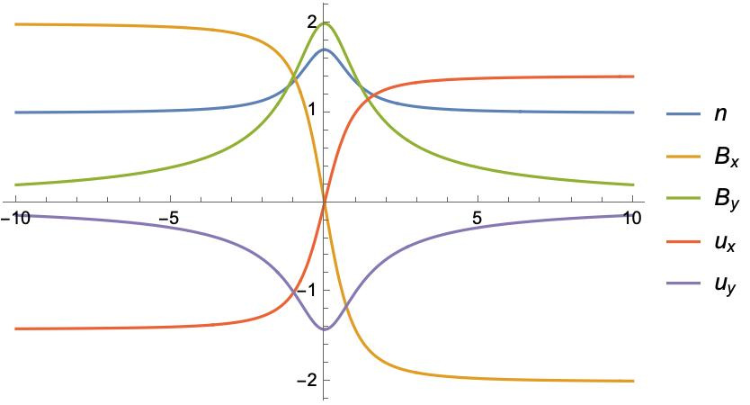
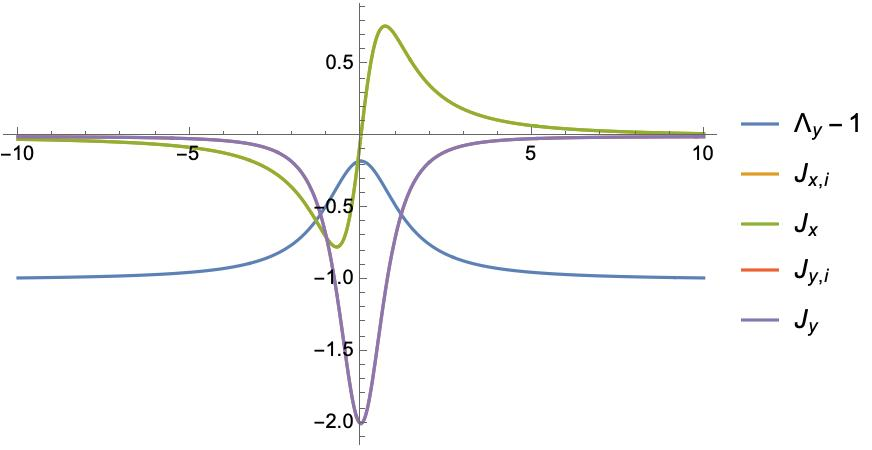

Current Sheet Theory
Plasma-Field Equations for a One-Dimensional Multifluid
Consider a collisionless, steady state plasma composed of multiple fluid groups, and follow the notation in Steinhauer, McCarthy, and Whipple (2008), we have \(3N\) equations for \(N\) ion species:
\[ \begin{aligned} Γ_α \frac{d u_{α x}}{d z} &= n_α u_{α y} B_z - Γ_α B_y \\ Γ_α \frac{d u_{α y}}{d z} &= Γ_α B_x-n_α u_{α x} B_z \\ Γ_α \frac{d u_{α z}}{d z} &= -\frac{1}{2} \frac{d p_α}{d z}-n_α \frac{d \phi}{d z}+n_α u_{α x} B_y-n_α u_{α y} B_x \end{aligned} \tag{1}\]
Ampere’s law connects the fields and the flow components and note that electron motion is along the field lines \(\mathbf{u_e} = Γ_e \mathbf{B} / (n_e B_z)\) :
\[ d B_y / d z = - J_x = - \sum_α n_α u_{α x} + n_e u_{e x} = -n u_x+\Gamma_e B_x / B_z \tag{2}\]
\[ d B_x / d z = J_y = \sum_α n_α u_{α y} - n_e u_{e y} = n u_y-\Gamma_e B_y / B_z \tag{3}\]
This is a system of \(3N+2\) equations for \(4N+2\) unknown dependent variables: \(B_x\), \(B_y\), and \(N\) each of \(n\), \(p\) \(u_x\), and \(u_y\).
\(B_z, Γ_α\) are constant.
Combine momentum equation (x) (Equation 1) and Ampere’s law (y) (Equation 3) with condition that the constant of integration vanishes at the current sheet center yield
\[ B_x B_z = \sum n_α u_{α,x} u_{α,z} = \sum Γ_α u_{α,x} \]
With asymptotic condition that the derivative goes zero, from momentum equation we have
\[ {B_z}^2 = \sum \Gamma_{\alpha}^2/n_{\alpha}(\infty) \tag{4}\]
In the following, we will consider a system with two ion species.
Force-free current sheet
We are interested in solutions with \(B_x^2 + B_y^2 = B_0^2 = const\) (force-free current sheet). From Ampere’s law (Equation 2) and (Equation 3), we have:
\[ n (u_x B_y - u_y B_x) = 0 \]
And \(n_1 u_{1x} B_y = n_1 u_{1y} B_x + C_1\) and \(n_2 u_{2x} B_y = n_2 u_{2y} B_x - C_1\). Assuming \(C_1 = 0\), from first two equations in (Equation 1), we have:
\[ u_{αx}^2 + u_{αy}^2 = const \]
Definition 1 Express the quantities of the second ion species relative to the first species
\[ u_{2x} := λ_x u_{1x}, \quad u_{2y} := λ_y u_{1y}, \quad u_{2z} := λ_z u_{1z}, \quad n_2 := λ_n n_1 \]
\[ Λ_x := 1 + λ_x λ_n, \quad Λ_y := 1 + λ_y λ_n, \quad Λ_z := 1 + λ_z λ_n \]
Notes
- \(Γ_e = (1 + λ_z λ_n) Λ_1 = Λ_z Γ_1\).
- \(Λ_z\) is constant while \(Λ_x, Λ_y\) are not.
Definition 2 Force-free condition let us express the magnetic field and velocity in terms of the angle \(θ\):
\[ B_x = B_0 \cos θ, \quad B_y = B_0 \sin θ \]
\[ u_{1x} = u_{1} \cos θ_1, \quad u_{1y} = u_{1} \sin θ_1 \]
\(C_1=0\) immediately implies \(θ = θ_1 + k \pi\) and \(Λ_x=Λ_y\).
The momentum equations (Equation 1) become:
\[ - u_1 \sin θ_1 θ_1' = n_1 u_1 \sin θ_1 B_z / Γ_1 - B_0 \sin θ \]\[ \Rightarrow θ' = - \frac{n_1 B_z}{Γ_1} \pm \frac{B_0}{u_1} \tag{5}\]
Note that \(θ_1, n_1\) are dependent variables, and \(u_1, B_0, B_z, Γ_1\) are constants determined by the system.
Given \(n_1\), we could solve \(θ_1\) from the above equation.
The derivative of \(θ\) goes to zero at infinity, gives us a relation between \(u_1\) and \(B_0\):
\[ u_1 = \pm \frac{B_0 Γ_1}{B_z n_1} \]
The Ampere’s law (Equation 2) become:
\[ B_0 \sin θ θ' = Λ_y n_1 u_1 \sin θ_1 - Λ_z Γ_1 B_0 \sin θ / B_z \]\[ \Rightarrow θ' = \mp \frac{Λ_y n_1 u_1 }{B_0} + \frac{Λ_z Γ_1}{B_z} \tag{6}\]
By equating the above two equations, we could get a relation between \(n_1\) and \(Λ_y\):
\[ Λ_y = Λ_y(n_1) = -\frac{B_0 \left(-n_1 u_0 B_z^2+B_0 \Gamma _1 B_z-\Gamma _1^2 u_0 \Lambda _z\right)}{\Gamma _1 n_1 u_0^2 B_z} \]
Solutions
Normalize the density by \(n_1(z=\infty) = 1\) and the magnetic field by \(B_z = 1\).
Assuming density profile \(n_1(z) \to \frac{c}{\left(\frac{z}{\delta }\right)^2+1}+1\)
We have
\[ \begin{aligned} \varphi (z) &\to \frac{\pi \Gamma _1-2 c \delta \tan ^{-1}\left(\frac{z}{\delta }\right)}{2 \Gamma _1} \\ B_x &\to B_0 \cos \left(\frac{\pi \Gamma _1-2 c \delta \tan ^{-1}\left(\frac{z}{\delta }\right)}{2 \Gamma _1}\right) \end{aligned} \]
For the simplest case \(λ_n = 1, λ_z = - 1\), from Equation 4, we have \(Γ_1 = - B_z / \sqrt{2}\).
We could also normalize the system length by \(\delta = 1\). So now the system could be fully determined by \(c, B_0\).
Given \(c = 1/\sqrt{2}\), we have \(B_y \to 0\) as \(z \to \infty\). Profiles are plotted below.


The multi-fluid effect is clearly demonstrated by \(Λ_y - 1\).
Manipulate[
Block[{B0 = B0i, c = ci},
p1 = Plot[
Evaluate[{n[z], Bx[z], By[z], u1x[z], u1y[z]} /. sols //.
rulesn],
{z, -zmax, zmax},
PlotLegends -> {n, Subscript[B, x], Subscript[B, y], Subscript[u,
x], Subscript[u, y]}];
Export["figures/profiles.jpg", p1];
],
{{ci, 1/Sqrt[2]}, 0, 2},
{{B0i, 2}, 0.5, 2},
{{zmax, 10}, 5, 30}
]
Manipulate[
Block[{B0 = B0i, c = ci, Λz = Λz0},
p = Plot[
Evaluate[{Λy - 1, Jxi, Jx, Jyi, Jy} /. sols //.
rulesn],
{z, -zmax, zmax},
PlotLegends -> {Subscript[Λ, y] - 1, Subscript[J,
x, i], Subscript[J, x], Subscript[J, y, i], Subscript[J, y]},
PlotRange -> All];
Export["figures/J_profiles.jpg", p];
p
],
{{ci, 1/Sqrt[2]}, 0, 2},
{{B0i, 2}, 0.5, 2},
{Λz0, 0, 1},
{{zmax, 10}, 5, 30}
]Questions
- Why not motionless electrons?
References
- Steinhauer, McCarthy, and Whipple (2008)